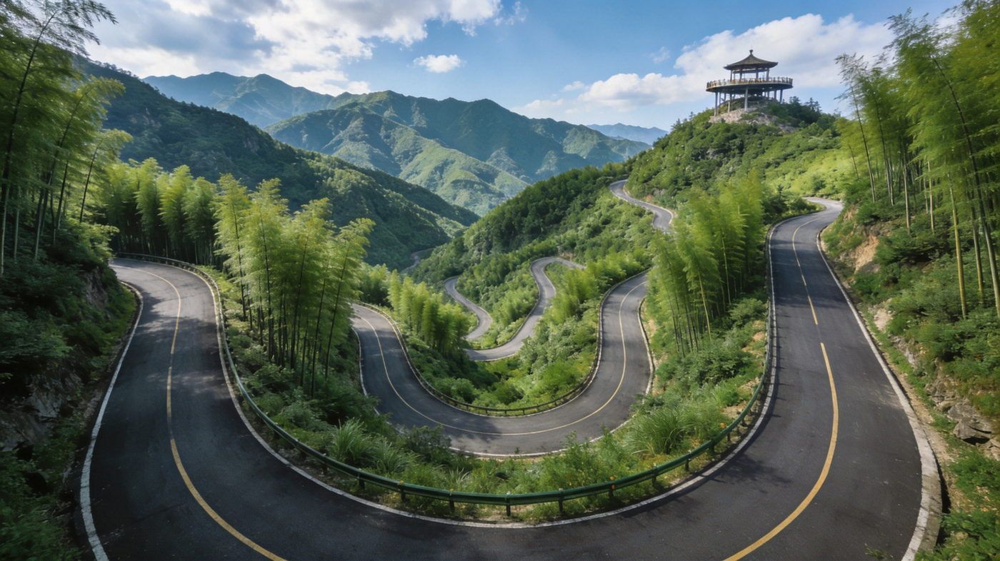
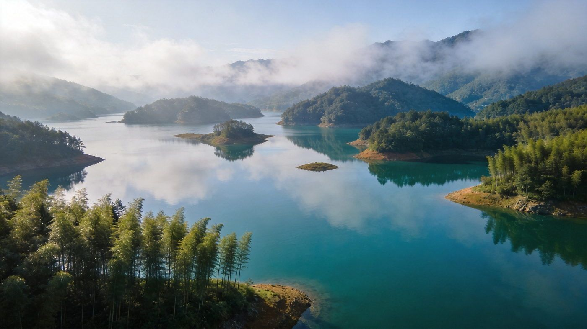
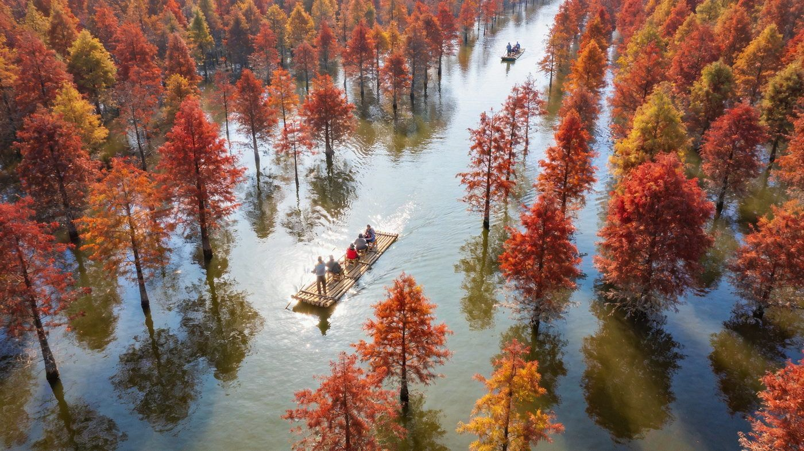
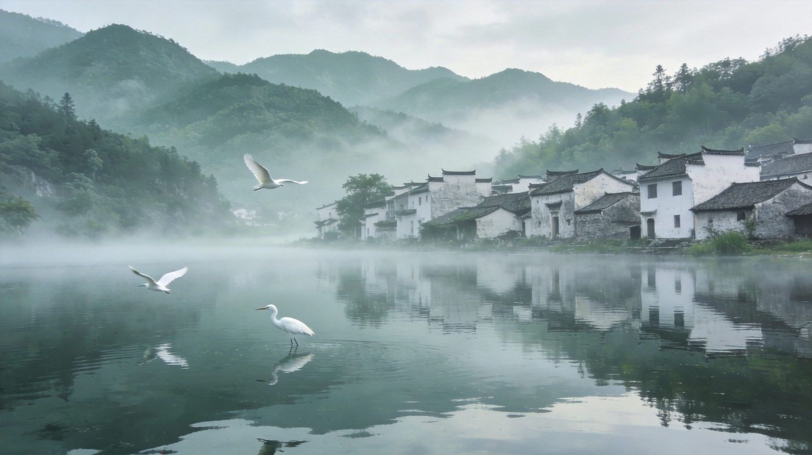
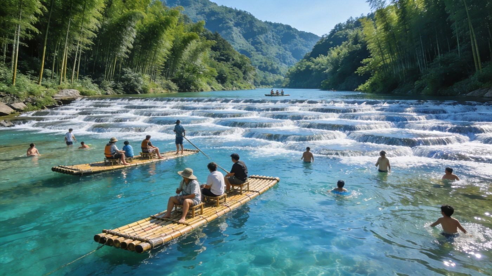

桃岭
桃岭六道弯 · 皖南川藏线灵魂路段
皖南川藏线的「西夏之魂」：上下坡各 10 公里，连续发卡弯盘山而上，最高点海拔 800 米以上，弯道角度极大，被称为华东地区驾驶体验最接近川藏线「怒江72拐」的路段。
👍 必去理由：自驾者的挑战圣地。山顶观景台可停车拍弯道与群山；行弯道前鸣笛减速、弯前绝不超车。新手慎入，建议老司机代驾。
配图：原创生成 · 无版权风险
安徽宁国到泾县的一段约 120 公里山水公路，被誉为「江南天路 / 皖南318」。串联储家滩、青龙湾、落羽杉、桃岭六道弯、水墨汀溪、月亮湾，一半竹海一半云端天路。求快走 2 天精华版，想惬意走 3 天慢玩版。适合 1–3 人自由行，含路线 / 住宿 / 美食 / 预算 / 出行方式对比。
核心策略：东进西出，D1 湖光（储家滩+青龙湾+桃岭），D2 玩水（月亮湾），节奏紧张但不赶。
把 2 天版拆开慢游，每天只做一个湖光+一个玩水，补充水墨汀溪与青龙潭，节奏宽松惬意。
把皖南川藏线上最有辨识度的 5 个点单独拎出来说清楚——值不值得去、怎么玩、藏在哪。

皖南川藏线的「西夏之魂」：上下坡各 10 公里，连续发卡弯盘山而上，最高点海拔 800 米以上，弯道角度极大，被称为华东地区驾驶体验最接近川藏线「怒江72拐」的路段。
👍 必去理由：自驾者的挑战圣地。山顶观景台可停车拍弯道与群山；行弯道前鸣笛减速、弯前绝不超车。新手慎入，建议老司机代驾。
配图：原创生成 · 无版权风险

集山景、水景、人文于一体的生态湖区，森林覆盖率 78%，被誉为「一级空气一级水」。湖面延绵 34 平方公里、散布 38 个岛屿，可坐游船或登高俯瞰，晨雾中宛如水墨。
👍 必去理由：全程湖光代表性景点。可乘游船或登惠云禅寺俯瞰；与储家滩同在东段，适合安排同一天。
配图：原创生成 · 无版权风险

位于青龙湾水库腹地，千亩水杉密集整齐地立在浅水之上。秋冬时节（11 月中下旬–12 月上旬）水杉渐红，倒映水面如幅油画，可乘竹筏穿行其间，航拍视角更震撼。
👍 必去理由：皖南春秋线最重要的「当季打卡点」，最佳观赏期 11 月中下旬–12 月上旬；可乘竹筏，出片率高。
配图：原创生成 · 无版权风险

青龙湾下游的大型水面，摄影基地。清晨薄雾笼罩时，白墙灰瓦的徽派村落倒映湖面，如一幅宁静的水墨画，时而有白鹭低空飞翔，烟雨时节意境最佳。
👍 必去理由：晨雾出片点。东入口进线首站，越早到越好（清晨 6–7 点最佳）；可从东入口直接看指示牌进入。
配图：原创生成 · 无版权风险

皖南川藏线西段的玩水胜地：网红鱼鳞坝可开车趟水、竹筏漂流，溪水清凉见底，两岸青山竹林，是整条线最轻松的欢乐收尾点，亲子家庭尤其喜欢。
👍 必去理由：全程最放松的玩水点。适合夏季戏水；玩水记得备换洗衣物、拖鞋和驱蚊用品。
配图：原创生成 · 无版权风险
皖南川藏线是自驾线，但不同方式体验差异很大。下面把三种方式讲透。
| 维度 | 🚗 自驾 | 🚙 包车 | 🚌 跟团 |
|---|---|---|---|
| 核心体验 | 自驾是主线玩法，桃岭六道弯只有自己开才有「征服」感，想停就停、追晨雾最自由 | 包车含司机，可点对点带玩，同样能走完沿线精华，不用自己开山路弯道 | 线路固定观光车/大巴，桃岭驾驶体验几乎无法体会，只做「顺路打卡」 |
| 适合 享受驾驶、想在六道弯挑战的司机 | 适合 不想开弯道山路的 2–3 人团、想省心又能到点游玩 | 适合 带长辈小孩、图省心、对「驾驶体验」无要求的游客 | |
| ✔ 自驾灵魂、自由度最高 | ✔ 免山路驾驶压力、可拼车分摊 | ✔ 省心安全、有人安排 | |
| 费用与成本 | 租车+油费+过路，2–3 人分摊人均更低 | 按天计费（约 500–800 元/天 含司机），人少时人均偏高 | 人均约 600–1000 元起，包住宿省心 |
| 2 天租车+油费约 500–900 元/车 | 包车 2 天约 1000–1600 元/车 | 跟团报价浮动大，注意自费项目 | |
| ✔ 3 人拼车人均最省 | ✘ 人少时人均过高 | ✘ 桃岭驾驶体验损失、节奏固定 | |
| 注意事项 | 桃岭六道弯弯急路窄，新手谨慎，建议老司机代驾 | 选正规平台/司机，确认是否含油费过路；司机不进景区但驾驶没问题 | 问清是否含竹筏/游船等自费，上车点固定 |
| 节假日七座以上禁入、易堵，带宠物可自驾 | 包车按天算，跨天/长途加价，提前议好 | 跟团大多不能真正体验六道弯驾驶 | |
| ✘ 需山路驾驶经验、累 | ✔ 折中推荐：2–3 人包车第二选择 | ✘ 深度/驾驶体验打折 | |
| 💡 一句话建议：能自驾就 自驾——这条线的灵魂就在桃岭六道弯的驾驶；不想开山路又想省心 → 包车；带老人小孩图安全省心 → 跟团。 | |||
皖南川藏线沿线民宿为主，三档价位供参考（2 人房计）。
徽菜风味为主，沿路农家乐/县城都可尝到，按份点即可。
含 1–3 人出行说明；区间为保守–宽松，实际以淡旺季与选择为准。
| 项目 | 2天精华版 | 3天慢玩版 |
|---|---|---|
| 大交通（往返，江浙沪/省内） | 约 100–300 | 约 100–300 |
| 住宿 | 1 晚 60–175 | 2 晚 180–350 |
| 餐饮 | 约 120–220 | 约 200–330 |
| 景点/游船/竹筏 | 约 60–140 | 约 120–220 |
| 租车油费（人均分摊） | 约 150–300 | 约 250–450 |
| 合计 · 人均 | 约 500–900 | 约 800–1300 |